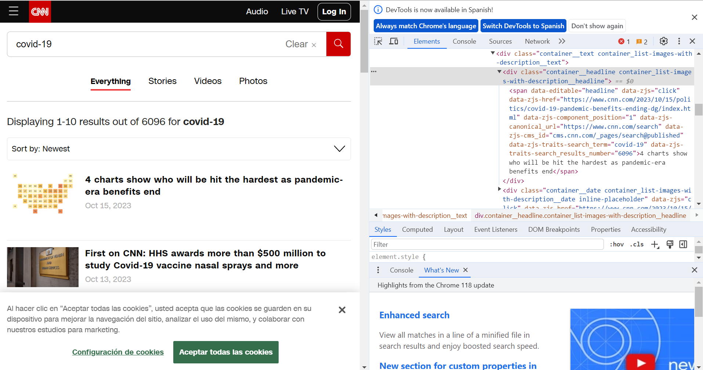

{kind=link}
<tagname>Content goes here</tagname>Web Scraping
Introduction
The internet is a vast repository of information, making it invaluable for various fields of study. To harness this wealth of data, web scraping tools become essential. Web scraping involves automating the process of extracting data from websites. The fundamental logic of web scraping includes:
- Entering a Page: Navigating to a specific webpage.
- Searching in HTML Code: Locating desired information within the HTML code.
- Tabular Transformation: Converting the extracted data into a tabular format, typically rows and columns.
HTML structure
The content and structure of a web page is written in HTML code. HTML code follows a tree-like structure, with parent nodes that open child ones and are composed by different objects. These different objects are called tags. Tags are essentially special keywords or code enclosed in angle brackets (< >) that indicate how the content on a web page should be displayed or formatted.
HTML tags come in pairs: an opening tag and a closing tag. The opening tag tells the browser when to start applying a specific formatting or structure, and the closing tag indicates when to stop applying that formatting or structure.
Here’s the basic structure of an HTML tag:
Note that the HTML tag has three elements. First, an opening tag, which is the first part of the tag and specifies the beginning of an element. It consists of the tag name enclosed in angle brackets. Afterwards, it contains the content, which is the the information or text that you want to include within the element. This content is displayed or affected by the tag. Finally, the closing tag is the final part of the tag and indicates the end of the element. It also consists of the tag name enclosed in angle brackets but with a forward slash (/) before the tag name.
Some common HTML tags include:
<html>: The root element that contains the entire HTML document.<head>: Contains metadata about the document, such as the title and links to external resources.<title>: Sets the title of the web page, which appears in the browser’s title bar or tab.<body>: Contains the main content of the web page that is visible to users.<h1>, <h2>, <h3>, etc.: Define headings of different levels, with <h1> being the highest level.<p>: Defines a paragraph of text.<a>: Creates hyperlinks to other web pages or resources.<img>: Embeds images in the web page.<ul>: Creates an unordered (bulleted) list.<ol>: Creates an ordered (numbered) list.<li>: Defines list items within <ul> or <ol> elements.<div>: A generic container for grouping and styling elements.
Aside from the tags, the elements of an HTML structure contain attributes. HTML attributes are special characteristics or properties that can be added to provide additional information about those elements. Attributes are used to modify or enhance the behavior and appearance of HTML elements. They are always specified within the opening tag of an HTML element and are defined as name-value pairs, separated by an equal sign (=).
Here’s the basic syntax of an HTML attribute:
<tagname attribute="value">Content goes here</tagname>It is important to note that the attributes have a name and a value. The value is typically enclosed in double or single quotes, though in some cases, it can be unquoted.
Some attributes can be used on almost any HTML element and are known as global attributes, while others are specific to certain elements. For instance, the id attribute can be used on most HTML elements, but the src attribute is specific to <img> elements.
Some of the most commonly used HTML attributes are:
id: Specifies a unique identifier for an element.class: Assigns one or more class names to an element.style: Allows inline CSS styling to be applied directly to an element.src: Specifies the source URL for elements like<img>,<script>, and<iframe>.href: Defines the URL of a linked resource for elements like<a>,<link>, and<area>.title: Specifies additional information about an element, often displayed as a tooltip when the mouse hovers over it.name: Used with form elements to identify and access their data when submitted.value: Sets the initial value of form elements like<input>and<textarea>.
It is important to note that the names of the attributes will be useful in selecting the elements of the webpage we want to scrape.
Accessing elements
So far, we addressed how the elements of a webpage appear in an HTML structure. But, how can we use this structure to select elements we want to extract? How do we make code that understands where a certain information is located in a webpage?
To do so, we use selectors. In this class, we will see an overview on how to use XPATH and CSS selectors to get the elements of a webpage.
XPath selectors
XPath selectors are a set of expressions and patterns used to navigate and select elements or data within an HTML document. XPath selectors allow you to target specific elements or data within the document’s tree-like structure (“XPath Syntax,” n.d.). Some of the most commonly used XPath selectors are:
tagname: Selects all nodes with the tag “tagname”./: Selects from the root node.//: Selects nodes in the document from the current node that match the selection no matter where they are..: Selects the current node...: Selects the parent of the current node.@attribute: Selects attributes named “attribute”.
These selectors can be combined to make complex element searches:
element1/element2: Selects element2 that is a child of element1.//element: Selects all elements with the specified name anywhere in the document.element[@attribute="value"]: Selects elements with a specific attribute and attribute value.element[@attribute]: Selects elements with a specific attribute (regardless of the value).
These selectors can be built manually, however nowadays there are many tools and plugins one can use to click on different elements of a website and get the XPath. A good tool is the plugin xPath Finder, or the Selenium IDE for Google Chrome. However, there are many other options for other browsers or to install in the computer. You can also continue to explore XPath Selectors in this website.
CSS Selectors
These are selectors that are based on CSS (Cascading Style Sheets) styling. CSS styling is a technology used in web development to control the presentation and visual design of HTML elements on a web page.
CSS uses selectors to target HTML elements and properties to define how those elements should be styled. Selectors can target specific elements or groups of elements based on their tags, classes, IDs, or other attributes. Properties specify aspects of an element’s appearance, such as color, size, spacing, and more. However, for our case, we will use CSS selectors as patterns to locate HTML elements and extracting the content of these elements (“CSS Selectors Reference,” n.d.).
Some of the most common CSS selectors are:
.class1: Selects all elements with class=“class1”..class1.class2: Selects all elements with both class1 and class2 set within its class attribute.#firstname: Selects the element with id=“firstname”.*: Selects all elements.element1: Selects allelements. element1.class1: Selects allelements with class=“class1”.
As in the case of XPath selectors, CSS selectors can be built manually or automatically with a tool. The rvest package for web scraping has the plugin selectorGadget to build CSS selectors.
Extracting data
So far, we went over how the unstructured data appears in websites: in the shape of an HTML structure. To extract information from the different webpages, we must use selectors to access the elements of this structure. The extraction of data can consist in three different activities: crawling, parsing and scraping.
- Crawling: is the process of systematically navigating through a website or the internet to discover and index web pages. It’s often performed by web crawlers or bots, also known as “spiders” or “web robots.” Crawlers follow links on a website to move from one page to another, mapping out the site’s architecture.
- Parsing: is the process of analyzing structured data (e.g., HTML, XML, JSON) to extract specific elements or information. In the context of web development, parsing is often used to traverse and extract data from structured documents like HTML or XML.
- Scraping: is the process of extracting specific data from web pages. It involves downloading web pages and then extracting the desired information, such as text, images, or structured data (e.g., tables) from the HTML source code.
In summary, crawling is the process of systematically exploring websites to map their structure and content, scraping involves extracting specific data from web pages, and parsing is the act of analyzing structured documents to extract meaningful information. While these activities are related and may often be performed together, they serve different purposes and involve distinct steps in the process of obtaining and working with web data.
The methodology to extract online data will depend on how this data appears. This can be in a static website, a dynamic website or an API.
Static websites
Static websites, often referred to as static web pages, are digital platforms composed of unchanging web pages. The content on a static website remains constant for all visitors and is impervious to alterations driven by user interactions or dynamic data sourced from a database. A good example of static websites are Wikipedia pages.
The content on static websites remains invariable until a developer intervenes to manually update it. These websites are particularly conducive to web scraping, given their lack of dynamically generated elements in response to user interactions. Extracting information from them primarily entails parsing the HTML structure, employing selectors to pinpoint the desired elements, and subsequently scraping the content.
Inspecting the HTML structure of a web page can be initiated through a simple process of right-clicking and selecting “Inspect” within the web browser, allowing deeper exploration.

Dynamic websites
Dynamic websites are websites that generate web pages on-the-fly, customizing content and appearance for each user or interaction. Unlike static websites, where the content is fixed and unchanging, dynamic websites use server-side scripting, databases, and other technologies to deliver content that can vary based on user input, user profiles, real-time data, or other factors. Dynamic websites are highly interactive and provide a personalized and data-driven experience for users. A good example of this kind of website is the MoMA page of artists in collection, where you have to click on the button ‘Show more results’ several times to get the entire list of artists. It is impossible to scrape the entire list of artists parsing the HTML structure as it appears, because it is updated every time the button ‘Show more results’ is clicked.
To scrape this kind of websites, we must use automated web browsers to make a script that interacts with the browser in the way a human would do and scrape the data. The most commonly used is the Selenium WebDriver, which can be integrated via Python. Some of the characteristics of automated web browsers are:
Programmatic Interaction: These browsers can perform actions such as loading web pages, clicking on links, filling out forms, and submitting data, just like a human user would. They do so through code or scripts.
Data Extraction: They can scrape text, images, links, and other information from web pages.
Headless Mode: Many modern web browsers, such as Google Chrome and Mozilla Firefox, offer a headless mode that allows them to run without a visible GUI. This makes them suitable for automation tasks.
Scripting Languages: Automated web browsers are often controlled using scripting languages, with the help of libraries or frameworks specifically designed for web automation.
Scheduled Tasks: They can be used to schedule repetitive tasks, such as checking for updates on websites, monitoring stock prices, or automating social media posts.
API
API stands for Application Programming Interface. It is a server that provides access to the data of an application or service. It is a set of rules, protocols, and tools that allows different software applications to communicate with each other. APIs define the methods and data formats that applications can use to request and exchange information, making it possible for various systems to work together and share data and functionality.
APIs depend on the owners of the applications, and they can offer access to them for free, charge for them partially or totally or not offer them at all. In most services, one will have to create a developer account in order to access the API. After gaining access, the user has to make a set of HTTPS requests to the API endpoints specified in the documentation. The output will be an API response, usually in JSON format. This output will have to be parsed in order to extract the needed data, since the result will be a set of nested data structures which may contain the required information in different levels.
Discussion
Legal Considerations
The legality of web data scraping is a complex topic, which depends a lot on where you live. However, by general principle, “if the data is public, non-personal, and factual, you’re likely to be ok” (Wickham, Çetinkaya-Rundel, and Grolemund 2023). These aspects are the most important to take into account, because they are directly attached to a site’s terms and conditions, personal identifiable information and copyright. The importance of these points is the following:
- Terms and conditions: In here, companies establish the regulations governing the usage of their websites. While scrutinizing these pages, you may notice explicit prohibitions against web scraping.
- Personally identifiable information: Data elements like names, email addresses, phone numbers, and dates of birth are profoundly sensitive and should not be collected lightly. Even if this information is publicly accessible on a profile, it is crucial to handle such data with the utmost care and ensure that personal information remains anonymized and unidentifiable.
- Copyright: When collecting data, one should also exercise caution with regard to copyrighted materials, including images, books, and other content that belongs to an author. Respecting copyright laws is imperative to avoid legal complications.
Scraped Data as Open Data
While we should take into account the previous considerations in terms of the ethical aspects of scraping web data, it is important to note that web data is often a source of accessing data that wouldn’t be available in any other way. For example, in the field of study of public opinion, scraping online news’ portals is a way of getting information about media coverage of certain topics straight from the source. This can also be done manually, doing a qualitative collection, but scraping data allows us to systematically extract more data, which makes us gain more coverage.
In this sense, scraping can be thought as a way of democratizing access to data. Of course, it still maintains certain level of elitism, because one needs to know how to code in order to scrape. However, it is a good tool in order to conquer back the data collected by monopolies of companies. A good example of data that used to be democratized but turned back to elitist and private is Twitter data (“Twitter Is Closing Free Access to Its API Starting Feb. 9” 2023). When Elon Musk acquired Twitter, one of the first policies he adopted was to make the Twitter API a paid service. Twitter data, which used to be a free, open source of data to fuel innovative research topics, became an elitist tool and database which now can only be accessed by a few.
References
“CSS Selectors Reference.” n.d. https://www.w3schools.com/cssref/css_selectors.php.
“Twitter Is Closing Free Access to Its API Starting Feb. 9.” 2023. https://siliconangle.com/2023/02/02/twitter-closing-free-access-api-starting-february-9/.
Wickham, Hadley, Mine Çetinkaya-Rundel, and Garrett Grolemund. 2023. R for Data Science: Import, Tidy, Transform, Visualize, and Model Data. 2nd edition. Beijing Boston Farnham Sebastopol Tokyo: O’Reilly Media.
“XPath Syntax.” n.d. https://www.w3schools.com/xml/xpath_syntax.asp.